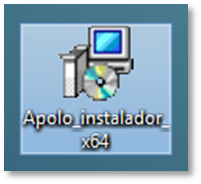
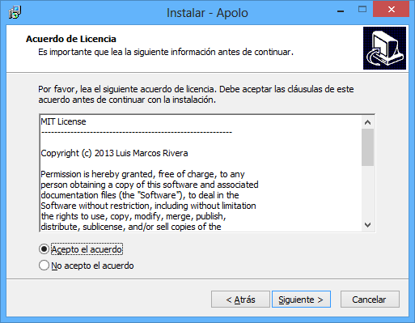
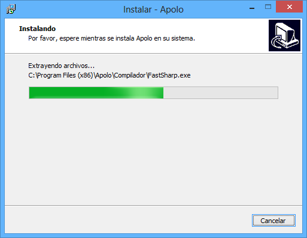
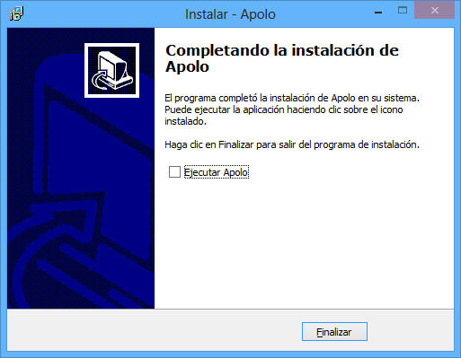
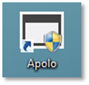

A continuación se muestran los primeros pasos para descargar, instalar y poner en marcha Apolo.
Apolo se puede adquirir desde la siguiente dirección:
http://actualizarapolo.p.ht/Setupx64.exe para SO de 64 bits.
http://actualizarapolo.p.ht/Setupx86.exe para SO de 32 bits.
A la hora de instalar Apolo hay que tener en cuenta que existen dos versiones, una para sistemas operativos de 32 bits y otra para 64 bits. Si usted tiene un SO de 32 bits, debe seleccionar Apolo_instalador_x86, si su SO es de 64 bits, debe seleccionar Apolo_instalador_x64.
En el ejemplo mostrado a continuación, se instalará la versión de 64 bits, no obstante, los pasos son los mismo. Primeramente, se ejecuta el archivo denominado Apolo_instalador_x64.

Ilustración 1. Icono instalador Apolo.


Una vez abierto el instalador, aparecen una serie de ventanas que indican los pasos para instalar Apolo. La primera ventana nos da la bienvenida, a continuación se debe pulsar en el botón siguiente. En la siguiente ventana se muestra los términos de la licencia los cuales deben aceptar y pulsar en siguiente.

Ilustración 2. Acuerdos de licencia.


En el siguiente formulario se expone una característica básica que debe disponer el sistema operativo, y es que esté actualizado a la versión 4 de Microsoft Framewok.
Posteriormente, se selecciona la carpeta donde se quiere realizar la instalación. El siguiente paso nos da la opción de seleccionar el nombre del acceso directo y si queremos crear uno en el escritorio.
Pulsamos en siguiente y aparece la opción de instalar.

Ilustración 3. Progreso de la instalación.


Para finalizar, aparece la opción de ejecutar la aplicación, que deberemos desmarcar puesto que la aplicación requiere permisos de administrador para ejecutarse.

Ilustración 4. Paso final de la instalación.


Una vez instalada la aplicación, buscamos el acceso directo en el escritorio y lo ejecutamos.

Ilustración 5. Icono Apolo.


Como se puede observar Apolo requiere privilegios de administrador para ejecutarse.
Created with the Personal Edition of HelpNDoc: Free Web Help generator